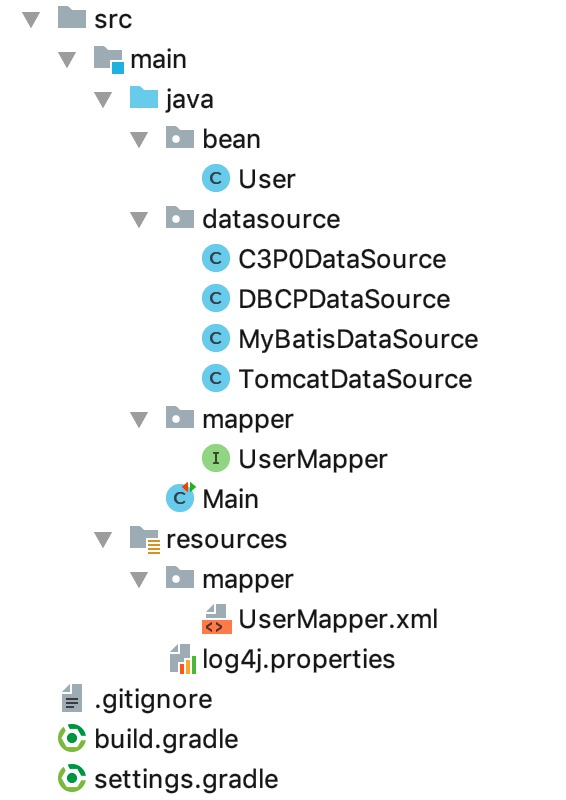

04. 如果不用 MyBatis 配置文件
本节示例代码在 mybatis-demo-003 。
前面的示例中用到了 mybatis-config.xml、mybatis-config-dbcp.xml 这种配置文件。可以不用吗？
可以不用，我们见下面的示例。
项目结构：

示例
在 datasource 包中创建 MyBatisDataSource 类，该类用于获取连接池，内容如下：
package datasource;
import org.apache.ibatis.datasource.pooled.PooledDataSource;
import javax.sql.DataSource;
public class MyBatisDataSource {
public static DataSource get() {
PooledDataSource dataSource = new PooledDataSource();
dataSource.setUsername("root");
dataSource.setPassword("123456");
dataSource.setUrl("jdbc:mysql://127.0.0.1:3306/blog_db?useUnicode=true&characterEncoding=utf8");
dataSource.setDriver("com.mysql.jdbc.Driver");
dataSource.setPoolMaximumActiveConnections(100);
dataSource.setPoolMaximumIdleConnections(8);
return dataSource;
}
}
在 Main 类中编写业务代码：
@Test
public void test_01() {
DataSource dataSource = MyBatisDataSource.get();
TransactionFactory transactionFactory = new JdbcTransactionFactory();
Environment environment = new Environment("development", transactionFactory, dataSource);
Configuration configuration = new Configuration(environment);
configuration.addMapper(UserMapper.class);
SqlSessionFactory sessionFactory = new SqlSessionFactoryBuilder().build(configuration);
SqlSession sqlSession = sessionFactory.openSession();
try {
UserMapper userMapper = sqlSession.getMapper(UserMapper.class);
User user = userMapper.findById(1L);
log.info("{}", user);
} finally {
sqlSession.close();
}
}
很简单，就是将 xml 配置用代码表达了一遍。
注意，UserMapper.xml 映射文件所在目录必须和对应的 UserMapper 接口在相同位置的目录下，且要同名。 比如 UserMapper 接口在 java 目录的 mapper 包下，UserMapper.xml 就必须在 resources 目录下的mapper 目录下。
执行后输出：
INFO [main] - User(id=1, name=letian, email=letian@111.com, password=123)
其他连接池
上面我们用到了 MyBatis 自带的连接池。我们也可以用其他的连接池。例如：
DBCP连接池：
build.gradle 引入依赖：
compile group: 'org.apache.commons', name: 'commons-dbcp2', version: '2.5.0'
datasource 包下新增 DBCPDataSource 类：
package datasource;
import org.apache.commons.dbcp2.BasicDataSource;
import javax.sql.DataSource;
public class DBCPDataSource {
public static DataSource get() {
BasicDataSource dataSource = new BasicDataSource();
dataSource.setUsername("root");
dataSource.setPassword("123456");
dataSource.setUrl("jdbc:mysql://127.0.0.1:3306/blog_db?useUnicode=true&characterEncoding=utf8");
dataSource.setDriverClassName("com.mysql.jdbc.Driver");
dataSource.setInitialSize(6);
dataSource.setMaxIdle(8);
dataSource.setMinIdle(6);
return dataSource;
}
}
编写测试代码：
@Test
public void test_02() {
DataSource dataSource = DBCPDataSource.get();
TransactionFactory transactionFactory = new JdbcTransactionFactory();
Environment environment = new Environment("development", transactionFactory, dataSource);
Configuration configuration = new Configuration(environment);
configuration.addMapper(UserMapper.class);
SqlSessionFactory sessionFactory = new SqlSessionFactoryBuilder().build(configuration);
SqlSession sqlSession = sessionFactory.openSession();
try {
UserMapper userMapper = sqlSession.getMapper(UserMapper.class);
User user = userMapper.findById(1L);
log.info("{}", user);
} finally {
sqlSession.close();
}
}
C3P0连接池：
build.gradle 引入依赖：
compile group: 'com.mchange', name: 'c3p0', version: '0.9.5.2'
datasource 包下新增 C3P0DataSource 类：
package datasource;
import com.mchange.v2.c3p0.ComboPooledDataSource;
import javax.sql.DataSource;
import java.beans.PropertyVetoException;
public class C3P0DataSource {
public static DataSource get() throws PropertyVetoException {
ComboPooledDataSource dataSource = new ComboPooledDataSource();
dataSource.setUser("root");
dataSource.setPassword("123456");
dataSource.setJdbcUrl("jdbc:mysql://127.0.0.1:3306/blog_db?useUnicode=true&characterEncoding=utf8");
dataSource.setDriverClass("com.mysql.jdbc.Driver");
dataSource.setInitialPoolSize(6);
dataSource.setMaxPoolSize(100);
return dataSource;
}
}
Tomcat JDBC 连接池：
build.gradle 引入依赖：
compile group: 'org.apache.tomcat', name: 'tomcat-jdbc', version: '9.0.12'
datasource 包下新增 C3P0DataSource 类：
package datasource;
import org.apache.commons.dbcp2.BasicDataSource;
import javax.sql.DataSource;
public class TomcatDataSource {
public static DataSource get() {
org.apache.tomcat.jdbc.pool.DataSource dataSource = new org.apache.tomcat.jdbc.pool.DataSource();
dataSource.setUsername("root");
dataSource.setPassword("123456");
dataSource.setUrl("jdbc:mysql://127.0.0.1:3306/blog_db?useUnicode=true&characterEncoding=utf8");
dataSource.setDriverClassName("com.mysql.jdbc.Driver");
dataSource.setInitialSize(6);
dataSource.setMaxIdle(8);
dataSource.setMinIdle(6);
return dataSource;
}
}